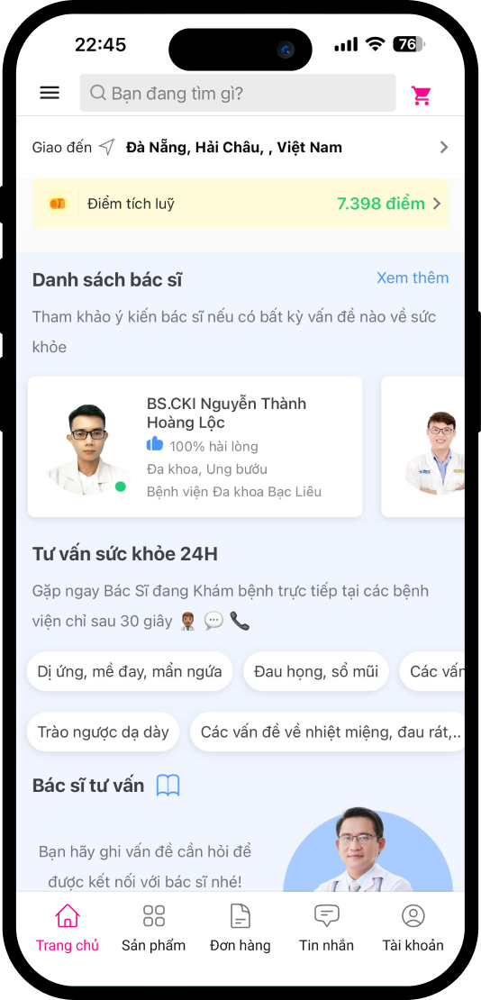

Project Overview
The tip feature for online doctor consultations is designed to allow customers to directly reward doctors as a way of expressing their satisfaction after a consultation. This idea arose from the high satisfaction rate among customers, with many choosing to revisit the same doctors simply to express their gratitude for excellent service.
The primary goal of this project is to motivate doctors to enhance the quality of their services while increasing their income, and at the same time, provide customers with a way to rate and reward doctors when they feel satisfied.
Key Objectives
- Allow customers to tip doctors if they rate the service as "Very Satisfied" or "Satisfied.
- Provide doctors with a monthly income tracking system that includes additional tips.
- Display income data, including tips, on the admin dashboard..
Key Metrics and Challenges
Key Metrics
A total of 220 successful doctor consultation orders were completed, meaning these orders were successfully processed without any issues.
Out of these successful consultations, 106 were rated as satisfactory by customers. This shows that a significant portion of customers were happy with the service they received.
Number of successful orders and orders with a customer satisfaction rating in January
Doctor consultation order successful
Successful orders rated as satisfactory by customers
Insight
- The percentage of successful orders rated as satisfactory is about 48.18% of the total successful orders.
- This is a crucial indicator for assessing the quality of service and customer experience, showing that the majority of consultations provided a positive experience for customers.
- During our monitoring of doctor consultation orders, we discovered an interesting trend: some customers are willing to pay for another consultation just to say, "Thank you, doctor," without seeking any additional advice.
Challenges
- How can we ensure that the tipping feature does not negatively impact the customer experience when using the app?
- Balancing the encouragement for customers to leave a tip without creating a sense of obligation or pressure is key.
Doctor tip feature concept
Based on collected insights:
- 48.18% of successful consultations are rated as "Satisfied" or "Very Satisfied," reflecting a relatively moderate level of customer satisfaction with the doctor consultation services.
- Some customers are willing to pay to schedule another consultation just to express their gratitude, without seeking further advice. This reflects their desire to acknowledge and appreciate the quality of service provided by the doctors.
Objectives of the doctor tip feature:
- Provide an easy and direct way for customers to express their satisfaction without needing to book another consultation.
- Increase doctors' earnings while encouraging them to maintain and improve service quality.
- Enhance customer experience by allowing them to show gratitude and recognition for the excellent service they received.
Implementation of the doctor tip feature
Subtle encouragement, no pressure
- After a consultation ends and the customer rates the service as "Very Satisfied" or "Satisfied," a gentle notification could appear: “Thank you for using our service. If you’d like, you can tip the doctor to show your appreciation.”
- Ensure that the suggestion is non-obligatory and free of pressure just a polite nudge.
Simple interface
- Create a simple popup after the customer rates the service, allowing them to choose a tip amount or enter a custom amount.
- Suggested tip amounts (e.g.,10.000 VND, 20.000 VND, 30.000 VND, ...) can be provided for convenience, with an option to enter a different amount if desired.
Flexible payment options
- Allow customers to pay tips through familiar methods like e-wallets.
- Ensure the payment process is straightforward and quick to avoid disrupting the customer’s experience.
Tip notification for doctors
- Doctors will receive a dedicated notification about the tip after each consultation, helping them recognize the appreciation from their customers.
- Provide doctors with a monthly income overview, including tips, so they have a clear understanding of their additional earnings.
User Flow

Visual Design
Here are some of the final design screens that we share



Assessing and Monitoring Feature Effectiveness
Monitoring
Track the percentage of customers who use the tip feature after rating "Very Satisfied" or "Satisfied."
Measure any increase in the percentage of "Very Satisfied" ratings following the introduction of the tip feature. Measure any increase in the percentage of "Very Satisfied" ratings following the introduction of the tip feature.
Detailed metrics for February, March, and April, 2024
Number of successful orders and orders with a customer satisfaction rating in Fed, Mar, Apr
Successful order
Successful orders are rated satisfactory
With the metrics collected over the 3 months after implementing the feature:
February
- The total number of successful consultations is 255, with 170 rated as "Satisfied," accounting for 66.67%.
- On average, 20-22 orders received tips in February.
March
- The total number of successful consultations is 256, with 155 rated as "Satisfied," accounting for 60.55%.
- On average, 11-12 orders received tips in March.
April
- The total number of successful consultations is 256, with 175 rated as "Satisfied," accounting for 68.36%.
- On average, 25-26 orders received tips in April.
Comparison of data before and after implementing the feature
In January, the total number of successful orders was 220, and the number of orders rated as satisfactory was 106, accounting for 48.18%, which is a relatively low average satisfaction rate. After implementation, the average customer satisfaction rate over the 3 months increased by approximately 35.3% compared to January.
Additionally, on average, in the 3 months (February, March, April), the number of orders that customers tipped the doctor to show satisfaction with the service was between 19 and 20 orders, with tip amounts ranging from 20,000 VND to 50,000 VND.
The number of orders with higher satisfaction has also increased, indicating that the addition of tips has contributed to motivating doctors to provide better customer care, improving their income. This also enhances the customer experience when using Medigo's doctor consultation services.